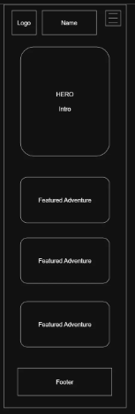
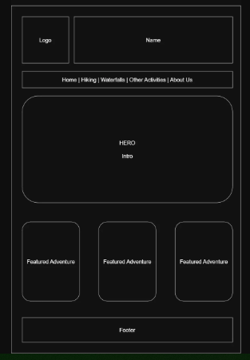

1. Site Name
North Georgia Outdoor Adventure Guide
This name was selected because it clearly identifies both the geographic area and the purpose of the website. The site will provide information about outdoor adventures throughout North Georgia, including hiking, waterfalls, camping, parks, and other recreational activities.
Proposed domain: northgaoutdooradventures.com
2. Site Purpose
The North Georgia Outdoor Adventure Guide will provide a centralized resource for discovering outdoor activities and destinations throughout North Georgia. Visitors will be able to explore hiking trails, waterfalls, camping areas, parks, and other outdoor adventures.
Each destination will provide useful information such as location, activity type, difficulty level, distance, and a brief description to help visitors choose an adventure that matches their interests and experience level.
3. Scenarios
The site will answer questions such as:
- Where can I find a hiking trail in North Georgia that matches my experience level?
- What waterfalls and outdoor destinations are located near me?
- Which North Georgia outdoor activities are appropriate for a beginner?
- How difficult is a particular trail and how far is it?
4. Color Scheme
The color scheme is inspired by the forests, mountains, rivers, and natural trails of North Georgia.
Deep Forest
#1F4D36
Used for the header, navigation, major headings, and footer.
Mountain Blue
#356A8A
Used for secondary headings, links, and supporting accents.
River Teal
#2F7F7A
Used for buttons, interactive elements, and highlights.
Warm Sand
#D8C3A5
Used for borders, card accents, and decorative elements.
Trail Cream
#F5F1E8
Used for card backgrounds and light text.
Charcoal
#263238
Used for body text and other primary readable content.
5. Typography
Montserrat
Montserrat will be used for the site's main headings, section headings, navigation, and other prominent text. Its bold and clean appearance will help establish a strong outdoor adventure theme.
Roboto
Roboto will be used for body text, descriptions, trail information, and other supporting content. It provides good readability for longer sections of text.
6. Wireframe
The home page wireframe will show the responsive structure of the site at both small and large viewport sizes. The wireframe will focus on page structure and content placement rather than colors, images, or detailed styling.
Small Viewport

Large Viewport
